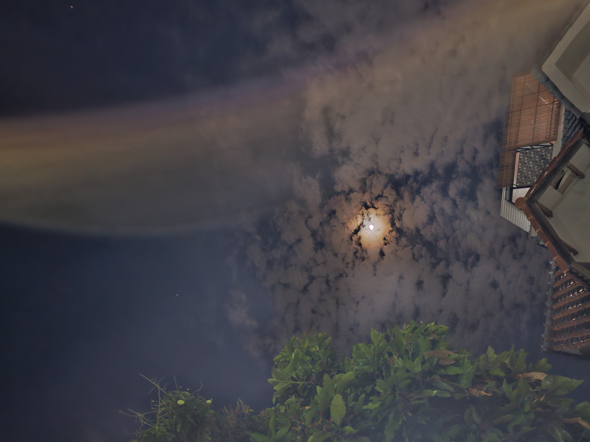
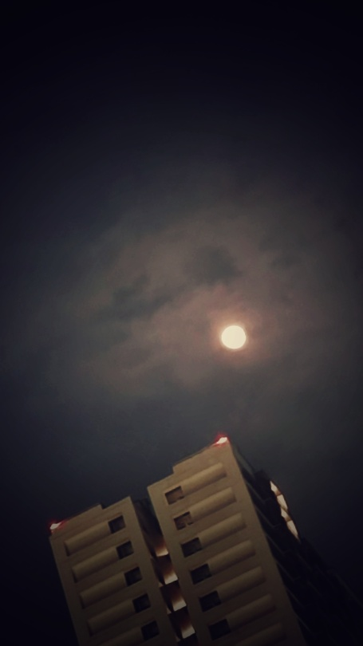
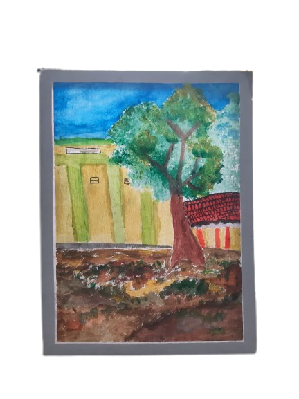
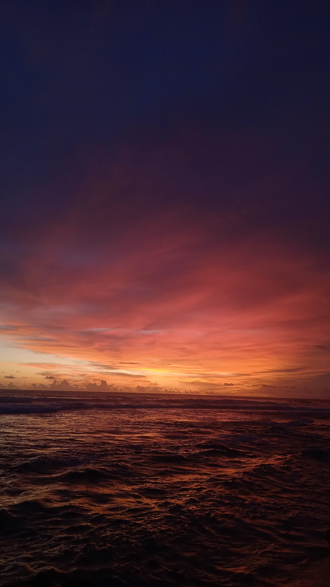
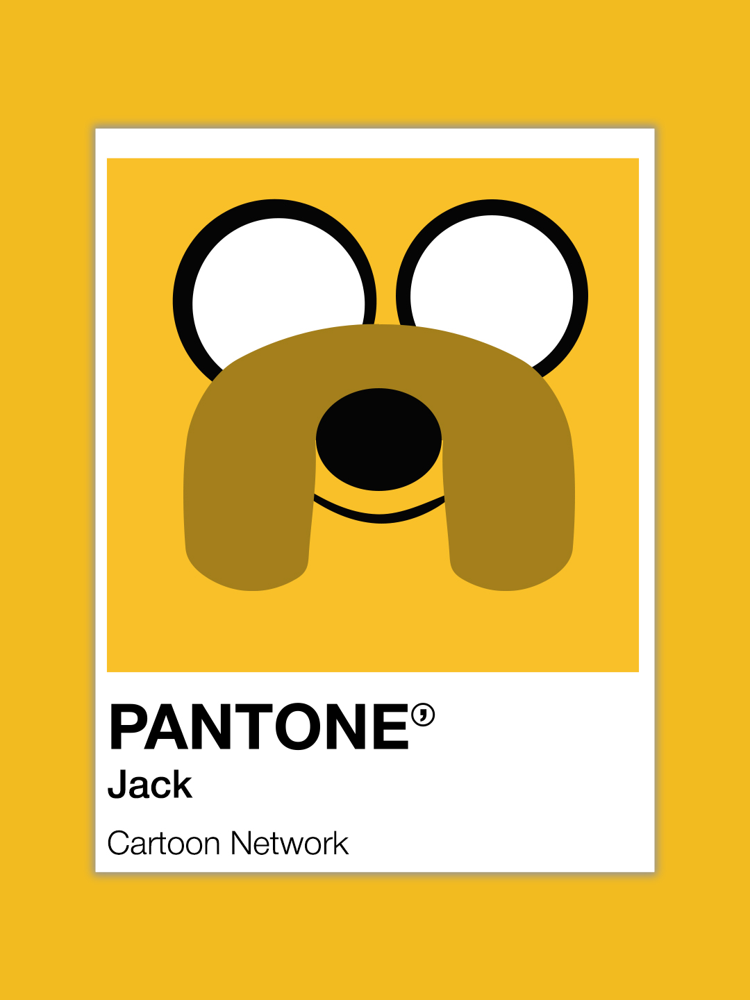
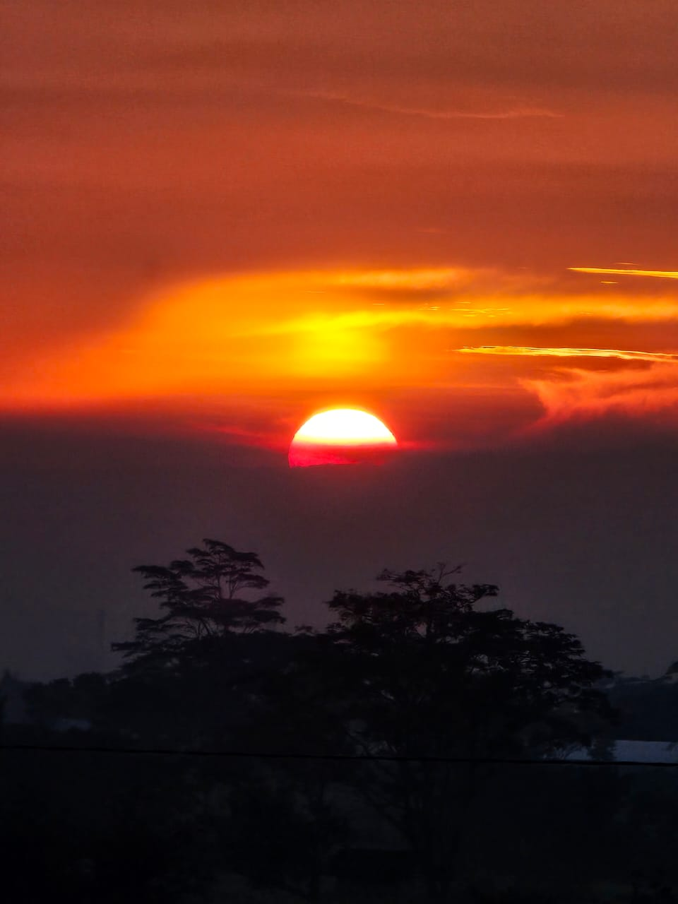
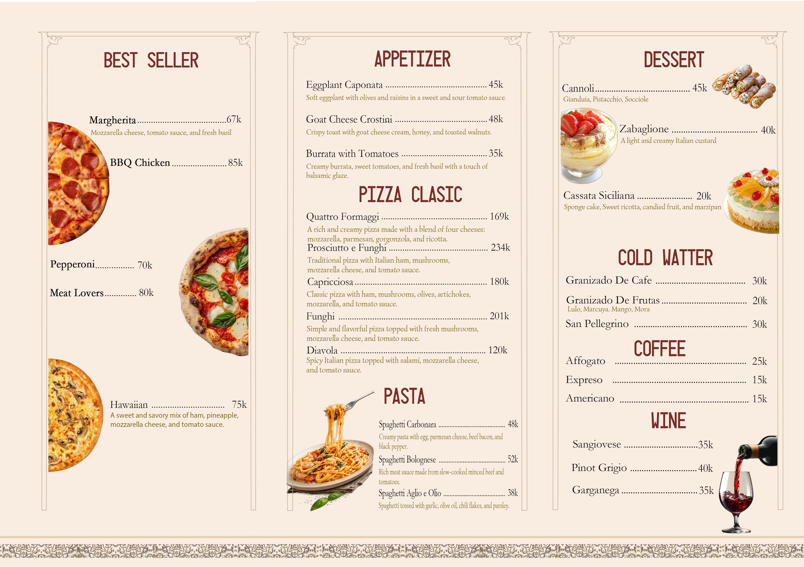
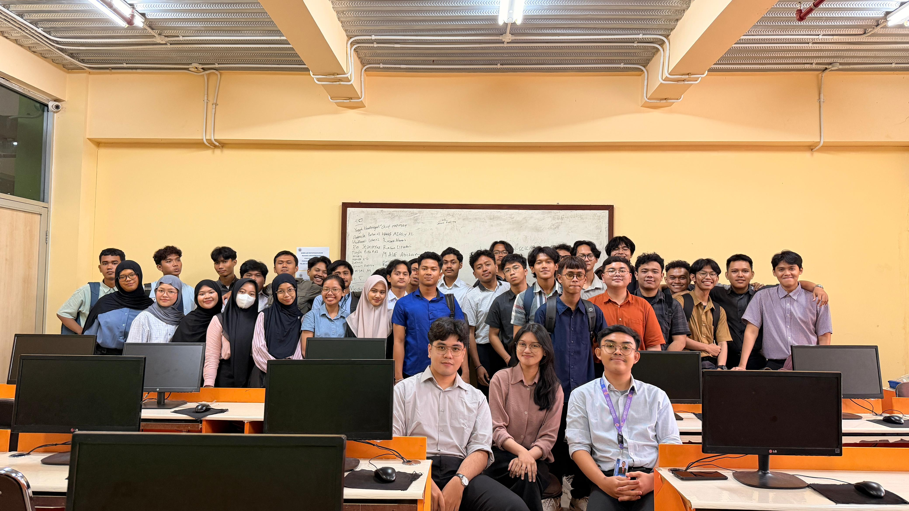
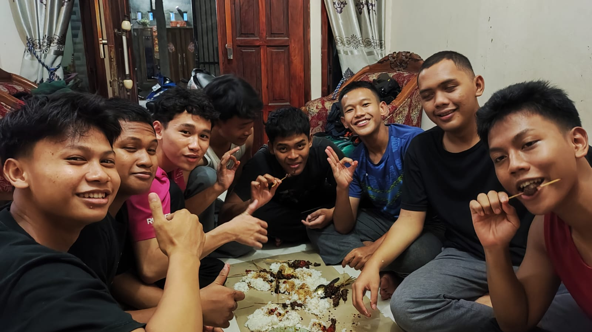
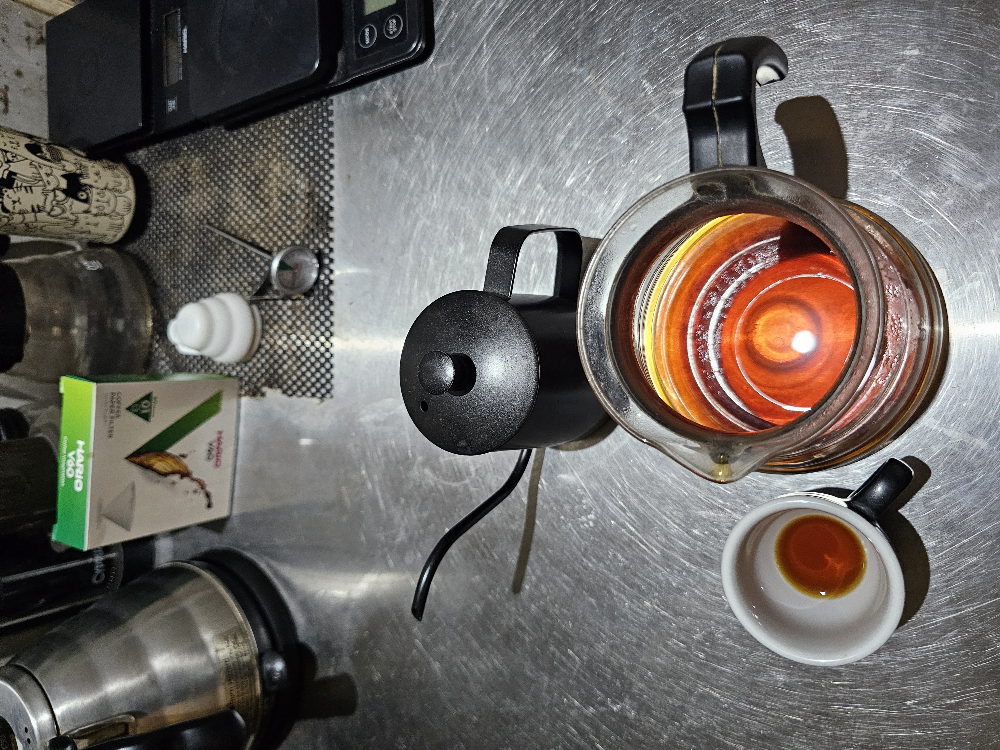

photographyCahaya di Kala Malam
"Cahaya yang menerangi jalanan kala kegelapan tiba."
Mahasiswa asal Tangerang yang sedang giat mendalami dunia Web Development dan desain kreatif. Tempat di mana baris kode, kreativitas visual, dan secangkir kopi berpadu menjadi karya nyata. ☕💻✨

Aspiring Web Developer & Creator
"Bagi saya, teknologi bukan cuma soal baris kode, tapi tentang membangun koneksi, memecahkan masalah, dan menciptakan pengalaman digital yang bermanfaat."
Saya adalah seorang mahasiswa asal Tangerang yang sedang giat mengeksplorasi dunia Web Development dengan rasa penasaran yang tinggi dan semangat yang membara.
Selain hobi ngoding malam-malam ditemani deru kipas laptop dan kopi hangat, saya sangat menyukai kerja sama tim. Saya percaya komunikasi yang hangat dan saling menghargai mampu menyatukan berbagai ide kreatif menjadi solusi yang luar biasa.
Membangun struktur website yang rapi, semantik, responsif, dan interaktif menggunakan HTML, CSS, dan JavaScript.
Senang bertukar pikiran, terbuka pada masukan, dan siap bekerja sama menyelesaikan tantangan bersama tim.
Menyeimbangkan logika coding dengan photography, melukis, dan pembuatan poster grafis untuk estetika visual yang kuat.
Teknologi dan perangkat kreatif yang saya gunakan dalam belajar dan berkarya
Fondasi pengembangan website modern & responsif
Visualisasi estetika antarmuka dan karya grafis
Menangkap cerita dan keindahan momen visual
Alat pendukung produktivitas dan kolaborasi
Kumpulan karya photography, desain grafis, lukisan, dan momen kebersamaan

photography"Cahaya yang menerangi jalanan kala kegelapan tiba."

Melukis & Seni"Lukisan sebuah pohon yang tertanam sendiri di halaman sekolah semasa SMA."

photography"Pemandangan indah pantai selatan di sore hari saat matahari terbenam."

Desain Grafis"Sebelum halal tetaplah untuk menjaga 17:32."

photography"Sunset perjalanan saat mudik, mengabadikan hangatnya jalan pulang."

Branding Media"Banner Menu makanan untuk membangun personal branding di dunia digital."

Kebersamaan"Kamu akan mengerti arti persahabatan ketika kamu mulai merindukan saat kebersamaan."

Kebersamaan"Merajut tawa, cerita, dan kebersamaan bersama rekan-rekan seperjuangan."

photography"Menikmati proses dan menyeduh ide di setiap tegukan."
Langkah demi langkah dalam meniti dunia rekayasa perangkat lunak
Mulai berkenalan dengan struktur kode HTML, styling CSS, dan rasa takjub ketika mampu menampilkan sesuatu yang hidup di layar peramban.
Memperdalam fondasi pemrograman web, memahami tata letak responsif, manipulasi JavaScript DOM, dan membangun portofolio mandiri.
Mengembangkan sense estetika lewat photography, desain poster, dan seni rupa untuk memperkuat kualitas visual antarmuka pengguna (UI/UX).
Terbuka untuk kolaborasi proyek, eksplorasi framework modern, dan berkontribusi sebagai talenta developer muda Indonesia.
Punya proyek, ajakan kolaborasi, atau sekadar ingin menyapa? Silakan kirimkan pesan!
Saya selalu antusias berdiskusi seputar web development, ide kreatif, maupun peluang kerja sama. Jangan ragu untuk menghubungi lewat kontak di bawah: